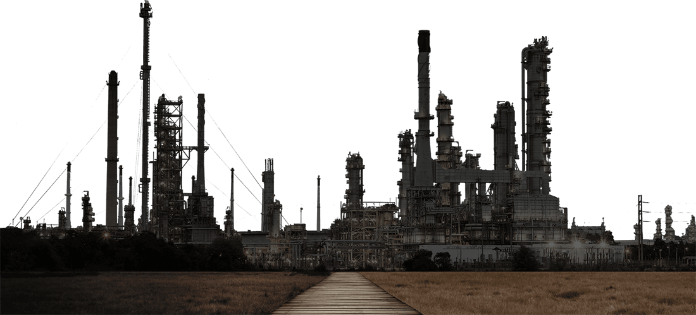

Nah, saat ini ada tantangan besar di industri hulu migas Indonesia.
Ada banyak faktor yang membuat produksi migas menurun. Semua itu tak lepas dari kondisi industri hulu migas nasional saat ini.
Produksi minyak bumi di Indonesia hanya 831.000 barrel per hari, jauh dari kebutuhan dalam negeri yang mencapai 1,6 juta barrel per hari. Artinya, Indonesia di bawah bayang-bayang krisis energi migas.
Untuk menutupi kekurangan tersebut, pemerintah mengimpor minyak. Bahkan, sejak tahun 2004, republik ini pun sudah menyandang status sebagai net importer minyak.
Sumber: SKK Migas
Keadaan tersebut semakin bertambah parah karena dari tahun ke tahun kebutuhan minyak dalam negeri semakin meningkat.
Sebaliknya produksi minyak domestik malah menurun.
Sumber: SKK Migas, 2016
Diproyeksikan ke depan, kebutuhan minyak bumi pun akan semakin bertambah.
Pada 2025, kebutuhan minyak Indonesia mencapai 1,93 juta barrel per hari. Lalu melonjak ke angka 3,86 juta barrel per hari pada 2050.
Sumber: Dewan Energi Nasional, 2016
Bagaimana dengan gas?
Saat ini, Indonesia belum menjadi negara net importer gas karena pasokan gas dalam negeri masih lebih besar daripada konsumsi. Namun, tren pemakaian gas meningkat dari tahun ke tahun.
Sumber: SKK Migas, 2016
Diproyeksikan, konsumsi gas domestik semakin meningkat di masa depan.
Pada 2050, pemakaian gas di Indonesia rata-rata mencapai 26 miliar MMSCFD. Angka itu meningkat hampir tiga kali lipat dibanding pada 2025 yang sebesar 9,5 miliar MMSCFD.
Sumber: Dewan Energi Nasional, 2016
Sebanyak 72 persen produksi minyak nasional berasal dari lapangan-lapangan tua yang telah berproduksi lebih dari 30 tahun.
Padahal, laju penurunan produksi alami atau natural production decline lapangan migas Indonesia sangat tinggi.

Untuk minyak bumi, rata-rata natural production decline-nya mencapai 29 persen per tahun dan gas 18 persen per tahun.
Butuh biaya lebih tinggi untuk mempertahankan level produksi migas. Nilai investasi yang ada saat ini pun belum cukup untuk mempertahankan level produksi.
Sebanyak 64 persen pipa penyalur sudah terpasang sebelum tahun 1980.
Adapun 57 persen anjungan lepas pantai sudah terpasang sebelum tahun 1980.
Sumber: SKK Migas, 2016
Hingga saat ini, pencarian cadangan migas melalui kegiatan eksplorasi belum membuahkan hasil yang menggembirakan. Akibatnya, cadangan migas Indonesia semakin menipis.
Hingga saat ini, pencarian cadangan migas melalui kegiatan eksplorasi belum membuahkan hasil yang menggembirakan. Akibatnya, cadangan migas Indonesia semakin menipis.
Pasca-penemuan minyak di Lapangan Banyu Urip, Bojonegoro, pada 2001, yang membukukan cadangan 450 juta barrel, belum ada lagi temuan cadangan yang besar.
Saat ini, nilai ketergantian cadangan atau reserve replacement ratio (RRR) migas Indonesia belum ideal. Angka RRR republik ini pada 2016 hanya 64,4 persen. (SKK Migas, 2016)
Nilai ideal RRR adalah 100 persen. Artinya, bila mengambil 1 barrel minyak mentah dari perut bumi, langkah tersebut mesti diimbangi dengan upaya menemukan cadangan baru dengan volume yang sama.


Ini merupakan pemandangan biasa yang sehari-hari terlihat di jalanan Jakarta.
Dari matahari terbit sampai terbenam hingga berganti bulan, Ibu Kota tak pernah surut dari hilir mudik kendaraan.
Namun, kondisi seperti itu tak lagi identik dengan Ibu Kota saja.
Surabaya, Bandung, Yogyakarta, Medan, Palembang, Makassar, dan kota-kota besar lainnya di Indonesia juga mengalami hal serupa.
Keadaan tersebut selaras dengan jumlah kendaraan di Indonesia yang selalu naik dari tahun ke tahun.
Pada 2013, jumlah kendaraan di Indonesia sebesar 104,1 juta unit lalu naik menjadi 114,2 juta unit pada 2014 dan setahun kemudian naik lagi mencapai 122 juta unit. Sumber: Badan Pusat Statistik, 2016
Tercatat sepeda motor menjadi kendaraan dengan laju peningkatan paling tajam. Contoh pada 2015, jumlah kendaraan roda dua naik sekitar 7 juta unit menjadi 99,6 juta unit dari tahun sebelumnya 92,9 juta unit.Sumber: Badan Pusat Statistik, 2016
Dengan asumsi rata-rata panjang sepeda motor 2 meter, bila dikalkulasi, maka pertambahan itu menghasilkan panjang 14 juta meter.
Angka itu setara dengan
94 kali jarak Jakarta-Bandung (150 kilometer).
Membeludaknya jumlah kendaraan di Indonesia tak lepas dari topangan pertumbuhan ekonomi dan industri yang terus berkembang ke arah positif.
Pada 2016, angka pertumbuhan ekonomi negeri ini menguat ke level 5 persen dari tahun sebelumnya 4,9 persen. Sumber: Bank Indonesia, 2016
Sementara itu, pertumbuhan produksi industri manufaktur sedang dan besar tumbuh 4 persen pada 2016.
Adapun angka pertumbuhan produksi industri manufaktur kecil pada 2016 sebesar 5,78 persen atau naik dari tahun sebelumnya 5,71 persen. Sumber: Badan Pusat Statistik, 2017
Namun, tahukah Anda, di balik angka-angka fantastis jumlah kendaraan bermotor dan pertumbuhan ekonomi serta industri di Indonesia, semua itu membutuhkan ENERGI .
Saat ini, minyak dan gas (migas) masih menjadi energi utama.
Angka konsumsi bahan bakar minyak (BBM) di Indonesia mencapai 72,6 juta ton pada 2016, sedangkan gas sebesar 33,9 juta ton. Sumber: BP Statistical Review, 2017
Lalu, apa yang terjadi bila Indonesia mengalami krisis energi migas dan pasokan BBM mengalami kelangkaan?
Bisa jadi semua aktivitas di negeri ini terganggu.
Antrean panjang di jalanan menjadi pindah ke stasiun pengisian bahan bakar umum (SPBU).
Tak cuma itu, pembangkit listrik pun dapat sulit beroperasi karena kekurangan pasokan bahan bakar.
Terlebih lagi, mayoritas pembangkit listrik di Indonesia masih mengandalkan bahan bakar migas.
Ada banyak faktor yang dapat membuat Indonesia kekurangan pasokan migas.
Selain menurunnya produksi migas nasional di industri hulu migas, faktor lain bisa datang dari kelancaran distribusi di industri hilir migas.
Adapun aktivitas di industri hulu migas meliputi eksplorasi dan produksi migas. Eksplorasi adalah aktivitas studi geologi, geofisika, survei seismik, dan pengeboran untuk menemukan cadangan migas baru.
Sementara itu, kegiatan di industri hilir terdiri dari pengolahan, pengangkutan, penyimpanan, dan penjualan bahan bakar.
Hasil Survey Perception Index menunjukkan bahwa iklim investasi migas Indonesia menduduki peringkat ke-79 di dunia.
Posisi ini menempatkan Indonesia di peringkat terbawah dari negara-negara di Asia Tenggara.
Penilaian tersebut berdasarkan:
Kejelasan regulasi merupakan hal yang banyak dipertanyakan investor hulu migas di Indonesia.
Salah satu yang dipertanyakan adalah revisi Undang-undang Migas yang hingga kini belum disahkan.
Padahal, industri hulu migas sudah lama menunggu perubahan dari peraturan tersebut.
Perizinan juga menjadi hal yang disorot investor. Saat ini, ada lebih dari 300 proses perizinan yang harus dilalui industri hulu migas.
Kompas.com, Sabtu (29/4/2017) menulis ada 30-40 persen (dari total jumlah) angka proyek eksplorasi yang tertunda atau gagal terlaksana akibat terhambat di proses perizinan.
Penurunan harga minyak dunia yang terjadi dalam tiga tahun terakhir semakin menekan industri hulu migas di Tanah Air.
Banyak investor migas menurunkan aktivitas eksplorasi di banyak negara, termasuk Indonesia.
Mereka melakukan hal itu untuk menekan pengeluaran dan menghindari kerugian.
Bila keadaan tersebut terus berlanjut dan tidak ada perbaikan iklim investasi di Indonesia, bukan tidak mungkin investor enggan menanamkan modalnya di dalam negeri.
Bahkan, investor yang sudah ada bisa saja hengkang dari Tanah Air. Hal ini akan berdampak langsung bagi ketahanan energi nasional.
Saat ini saja, cadangan minyak bumi Indonesia hanya cukup untuk 11 tahun ke depan, sedangkan cadangan gas akan habis dalam waktu 40 tahun lagi. Sumber: SKK Migas, 2016
Migas masih mendominasi pasokan energi primer Indonesia sampai beberapa dekade mendatang. Faktanya, kini 69 persen energi primer Indonesia dipasok oleh migas. Porsi itu akan menjadi 47 persen pada 2025 dan 44 persen pada 2050.Sumber: Dewan Energi Nasional, 2016
Pertama, perbanyak eksplorasi
Mendorong kegiatan eksplorasi dengan target lapisan yang lebih dalam. Lalu mengeksplorasi daerah-daerah terpencil, perairan laut dalam, dan cekungan-cekungan lain yang berpotensi mengandung cadangan migas.
Namun, semua itu akan tercapai bila industri hulu migas di Indonesia kompetitif. Maka dari itu, dibutuhkan penyederhanaan regulasi dan perizinan, serta pemberian insentif yang lebih menarik.
Selain itu, diperlukan pula kemudahan akses dan ketersediaan data geologi yang memadai bagi para investor hulu migas. Perlu dukungan kuat pemerintah agar semua itu dapat berjalan dengan baik.
Terlebih lagi, industri hulu migas adalah proyek strategis negara untuk bangsa Indonesia. Industri ini pun siap kerja bersama, lebih cepat dan efisien dengan berbagai pemangku kepentingan.
Kedua, produksi dan konsumsi yang bijaksana
Nah, agar cadangan migas yang sudah ada bisa digunakan untuk jangka panjang, sebaiknya penambangan migas dilakukan dengan bijaksana, yaitu melalui konservasi dan penerapan teknologi tepat guna.
Konservasi artinya cadangan migas yang ada di perut bumi tidak asal dikuras habis. Target produksi harus disesuaikan dengan kemampuan reservoir atau lapisan bebatuan yang menyimpan kandungan migas.
Tujuannya agar pada jangka panjang tidak terjadi kerusakan reservoir
Teknologi tepat guna artinya penerapan teknologi yang tepat sasaran untuk meningkatkan produksi. Misalnya, peningkatan produksi dan cadangan melalui penerapan teknologi enhanced oil recovery (EOR).
Dari sisi konsumsi, penggunaan bahan bakar berbasis migas harus dihemat. Terlebih lagi, gap antara produksi dan konsumsi minyak semakin lebar dari tahun ke tahun.
Ketiga, diversifikasi energi
Diversifikasi energi adalah upaya penganekaragaman energi. Konversi minyak ke gas adalah salah satunya.
Program konversi minyak ke gas sebenarnya sudah berhasil dilaksanakan pada progam konversi minyak tanah ke liquefied petroleum gas (elpiji). Sayangnya, keberhasilan tersebut tak berlanjut pada program konversi BBM ke bahan bakar gas (BBG).
Padahal, energi gas lebih murah dan ramah lingkungan dibanding minyak. Cadangan gas Indonesia juga lebih besar daripada minyak bumi.
Pemerintah beserta semua pihak yang terlibat pun harus memberikan dukungan dan komitmennya agar program konversi BBM ke BBG bisa berlangsung sukses.
Diversifikasi energi dapat pula dilakukan dengan mendorong penggunaan energi baru dan terbarukan (EBT).
Berdasarkan data Dewan Energi Nasional 2016, pemanfaatan energi terbarukan di Indonesia baru 5 persen dari total pasokan energi. Diperlukan usaha lebih keras lagi agar porsi EBT semakin bertambah pada masa mendatang.
Ketergantungan terhadap energi fosil, terutama minyak, harus dikurangi agar pengelolaan energi bisa sustainable atau berkelanjutan.